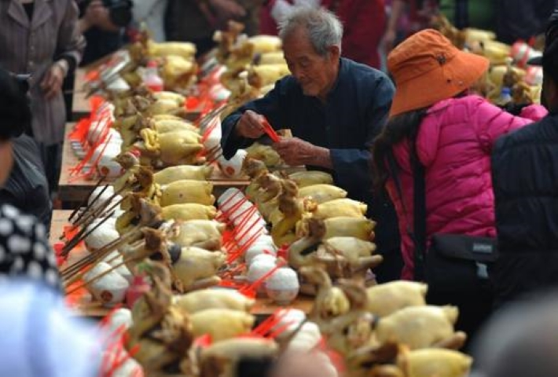
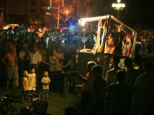
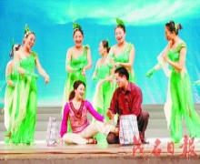
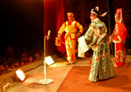

年例
年例是茂名地区的特色节日，明清时地方志已有记载，有“年例大过年”之说。年例头尾三天，俗称“起年例”、“正年例”和“年例尾”。

各地年例的时间不同，基本集中在农历正月初二至二月的时段内。主旨是祈祷风调雨顺、百业兴旺、国泰民安。内容有游神、游灯、点灯、打醮、舞狮、做大戏（粤剧）、演木偶戏、燃放烟花炮竹等。
一般在农村举行，当天外出打工的人都会返回，家家户户大摆宴席招待亲朋戚友，不论是否相识，一律热情款待茶饭酒菜，充满独特的地方风情和浓厚的乡土气息。
化州年例是茂名年例的组成部分，又称“年宵”，源于明代而盛于清初，沿袭至今。年例第一天（正月十一日）出灯，第二天接神，第三、四日游神，第五日押舟（烧船赶鬼）。
年例期间，亲戚朋友几天饮宴，请各式戏班连续演出。年例结束当晚游灯，结束时抢花炮。化州年例从正月初二起，各地陆续举行，带有中国古代家族祭祀的原始宗教意味。
木偶戏

南宋以后，由中州迁至福建的移民有不少迁来化州，木偶戏（俗称鬼仔戏）便同中州文化一道传入，历元、明、清三朝，日趋发展繁荣。
至清末民初，木偶班发展为不同类型。就其舞傀形式分，有提线木偶，有仗头木偶，仗头木偶又有小傀、大傀之别；就其规模大小分，
有单台戏（1人）、中班（3~6人）、大班（10多人）；就其唱腔分，有唱鬼仔戏者，有唱粤曲者。另外一种“阴阳班”，
白天（下午开始）舞傀儡唱粤曲，夜晚由化装演员演唱，与一般粤剧无异。
境内各种类型之木偶班，以唱鬼仔戏者为主体，化北多为单台戏，化南多为中班、大班。
由于鬼仔戏用本地话演唱，声韵修扬，妇孺皆懂，为群众喜闻乐观，历久不衰。
每当民间节日、农闲或其他庆典，群众多请木偶班演唱助兴，台期一般三五天，也有连演上个月者。因而化州素有“森偶之乡”之称。
话剧
化州市话剧兴起于民国8年（1919）“五四”运动之后。其时，县城学校多有师生演出话剧，民众称之为“文明戏”

民国27年，在抗日救亡运动的推动下，该市话剧日趋兴盛。其时学校师生纷纷组织话剧团或宣传队排练演出话剧。
每当各圩镇的圩期，不时有学生街头演出队及广东省第十一游击队区属下的乡村工作团，演出以哥哥歌颂抗日将士英勇杀敌、揭露控诉日本侵略军暴行为内容的短剧、活报剧，
其中较为活跃的剧团有街头演出队，职业中学话剧团、县立第一中学话剧团、县立第二中学演出队、醒民剧团、驻军高钦师管区第四补充团剧团等，
上演话剧剧目有《松花江上》、《台儿庄》、《游击队母亲》《八百壮士》、《夜之歌》、《放下你的鞭子》、《牛头岭》、《抗日保家》等。
学生街头演出队、职中话剧团巡演期间，兼募捐大衣、粮食、散发宣传资料，慰劳抗战将士。
民国30年5月，七区专员张炎发起在县立第一中学运动场子举行了为期7天的“抗日救国宣传周”，
白天举行体育运动比赛，晚上组织演出《黄河大合唱》、《打回老家去》、《雷雨》、《放下你的鞭子》等节目，对鼓舞民众抗日起到积极作用。
粤剧

俗称“大戏”，为化州传统的剧种，历来城、乡人民所喜爱。清代中叶开始传入本市。
清末和民国，市区及南安、杨梅、南盛等大圩镇都组建有业余或职业粤剧班，每于民间节日、庆典活动或农闲进演出。
除本地粤剧班上演外，城、乡还不时集资聘请省、港的专业粤剧名班到来演出。当省港粤剧名班上演时，往往方圆几十里的人都赶来观看。
其时演粤剧名班在广场搭戏楼公演，分日戏和夜戏，日戏约从下午2时演至晚上8时，夜戏人晚上8时演至第二天黎明。
除官绅、富户在戏楼前广场两旁搭“子楼”坐着看戏外，众多观众均是站着观看。演出多为传统的剧目。
如《六月飞霜》（窦娥冤）、《白蛇传》、《陈世美不认妻》等。
 登陆
登陆